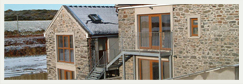

(0)1624 882289
(0)1624 882289Welcome to Cornmill cottage and Apartments
The Cornmill Cottages are located in the Northern Plain of the Isle of Man, well known for its sunnier climes amid the quiet unspoilt beautiful Manx countryside at Lhen Bridge. The former 19th century water driven cornmill and Millers Cottage have been tastefully renovated and modernised to a very high standard, whilst still retaining many of the original features with old-style charm. They are at the periphery of a modern working arable farm, but with their own separate entrance.
Get away from the hustle and bustle of modern day life, unwind in the natural beauty of the local countryside and recharge your batteries! Imagine yourself breakfasting on the patio with open views across undulating wheat fields to the purple haze of
They are about forty to forty five minutes drive from Douglas Sea Ferry Terminal or Ronaldsway Airport, where hirecars are both readily available. Each holiday cottage is spacious, comprising of vestibule, lounge area, kitchen area, two bedrooms and bathroom. All are fully equipped for four persons and there are no hidden extras. Each cottage is designated no-smoking. They are ideally suited for family holidays or weekend breaks.
Cornmill Cottage and Apartments holds 4 Stars with the Isle of Man Tourist Board
Our Location & Activities
Lhen Mill House, Kirk Andreas,
Isle of Man, IM7 3EP
Tel / Fax: +44 (0)1624
Mobiles: +44 (0)7624 462684
Email: lizmcmillin@manx.
more...